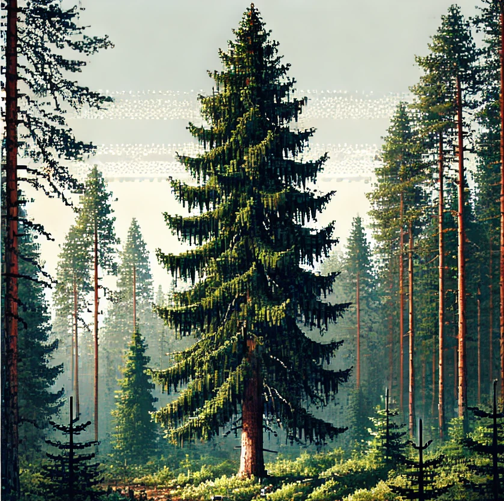
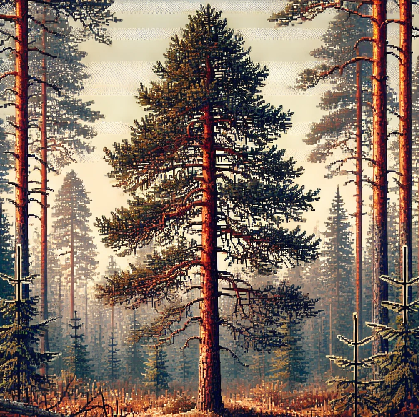
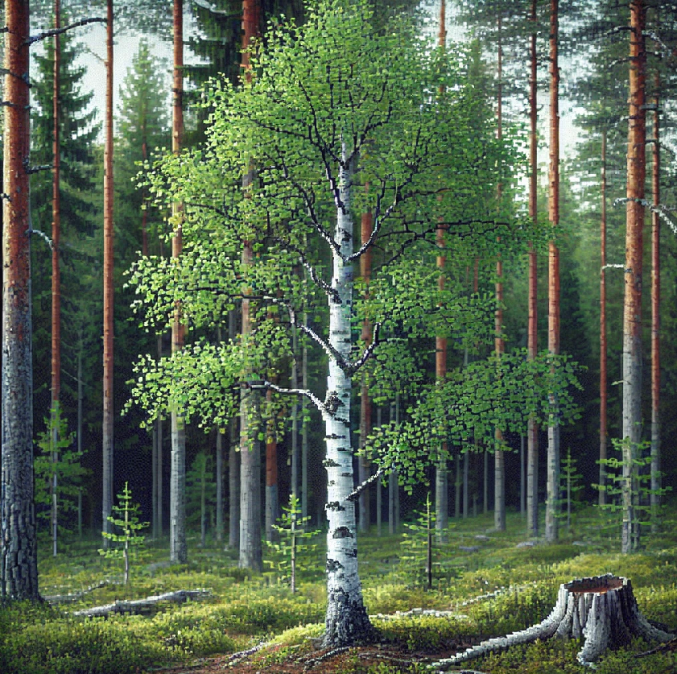
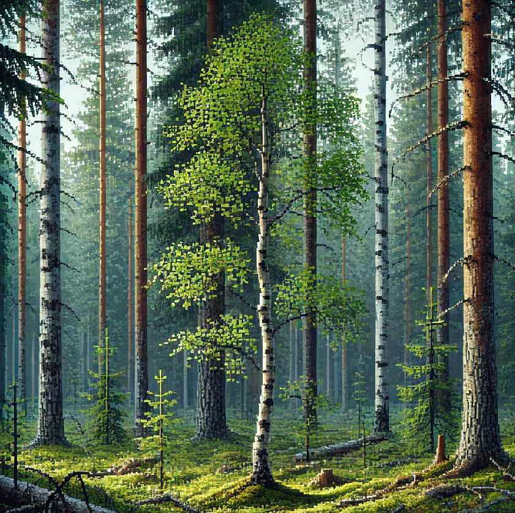

 |
ЕльЕль высокорослое дерево, может превышать 30 метров в высоту. Средняя длительность жизни елки составляет около 500 лет. Прочность древесины и высокая теплоотдача елки позволяет применять растение в промышленных целях. Размножается растение при помощи семян, которые располагаются внутри шишек. |
|  |
СоснаСосна дерево высотой до 25-40 м, с прямым стволом диаметром до 0,5-1,2 м. Крона высоко поднятая, конусовидная, а затем округлая, широкая, с горизонтально расположенными в мутовках ветвями. Корневая система мощная, обширная, с ярко выраженным глубоко проникающим стержневым корнем. |
|  |
БерезаБереза является не только красивым деревом, но и ценным ресурсом для человека. Ее листья используются в медицине, а древесина – в строительстве и производстве мебели. Широко используется в народном творчестве (плетение из бересты, резьба по дереву). В пищевой промышленности популярен березовый сок. |
|  |
ОсинаОсина выделяется колонновидным стволом, достигающим 35 м высоты и 1 м в диаметре. Кора молодых деревьев гладкая, светло-зелёная или зеленовато-серая, ближе к комлю с возрастом растрескивается и темнеет. Осина живёт относительно мало - обычно 80-90 лет. Часто это дерево используют в строительстве бань и саун. Кора осины обладает жаропонижающими, антиоксидантными, противомикробными свойствами. Осиновой корой лечат диарею и ревматизм. |